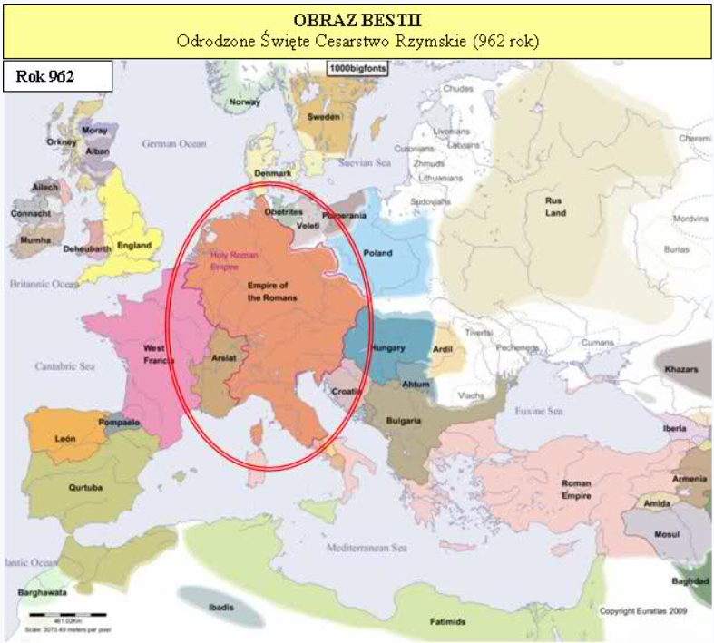
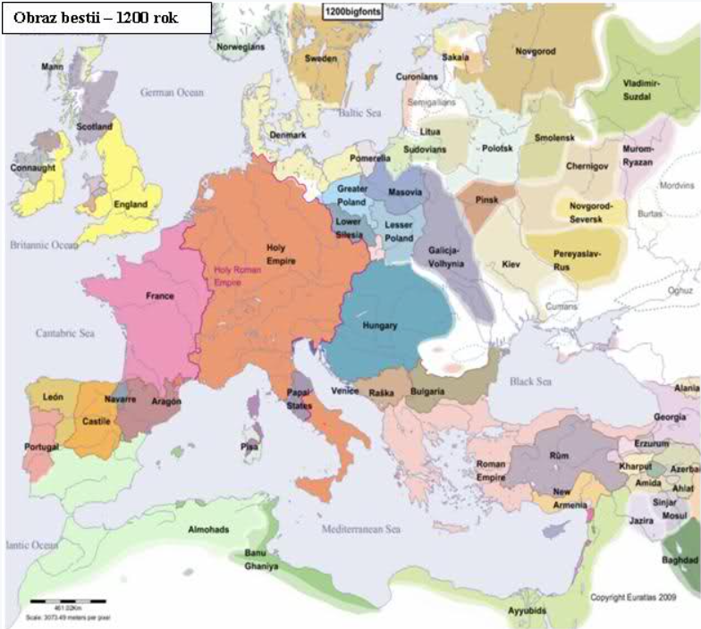
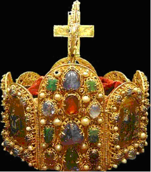
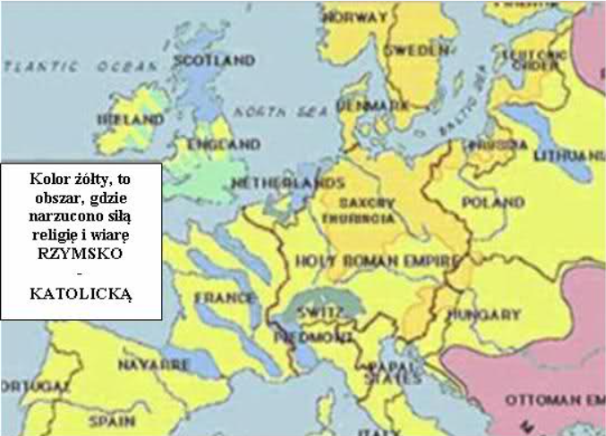

Rozdział 13 (cz.3)
CZĘŚĆ 3, ciąg dalszy Rozdziału 13
„I czyni wielkie cuda, tak, że i ogień z nieba spuszcza na ziemię na oczach ludzi.”
Bestia nie czyniła dosłownie cudów, ale okłamywała ludzi, wmawiając im, że na przykład RELIKWIE, które posiadają, takowe czynią.
Jeszcze większe kłamstwo - bluźnierstwo (obecne do dziś), to rzekomy „cud” przeistoczenia, przemienienia hostii (opłatka) oraz wina mszalnego przez w realne ciało i krew…
Choć początki tej bajki sięgają już 787 roku (Sobór Nicejski II), to dopiero na IV Soborze Laterańskim w 1215 roku zostało to oficjalnie sformułowane i kanonizowane przez papieża Innocentego III, jako dogmat, o którym "orzeka":
„Wierzyć, że jest to tylko przemiana symboliczna to gorsze odstępstwo niż zakwestionować fakt zmartwychwstania.”
Jak orzekł Sobór Trydencki 1545-1563:
„Jeżeli ktokolwiek zaprzeczy, że ciało i krew razem z duszą i Bóstwem naszego Pana Jezusa Chrystusa, a więc cały Chrystus są prawdziwe, rzeczywiste i cieleśnie obecne w sakramencie Przenajświętszej Eucharystii i jeżeli twierdzi, że jest On tam tylko w sposób symboliczny — to niech będzie przeklęty!” (KANON I).
„Jeżeli ktokolwiek będzie twierdził, że Chrystus — jednorodzony Syn Boga nie powinien być czczony w świętym sakramencie Eucharystii i publicznie uwielbiony (w Latrii), i że nie należy Mu oddawać czci w zewnętrznych, uroczystych procesjach zgodnie z chwalebnymi i powszechnymi obrzędami i zwyczajami Kościoła Świętego, i że uwielbiający Go są bałwochwalcami — niech będzie przeklęty!” (KANON IV).
Bestia nie ściągała także literalnego ognia z nieba, natomiast z polecenia papieży głosiła, że każdy, kto się im nie podporządkuje ściągnie na siebie ogień gniewu Bożego, będzie się smażył w piekle itp., itd.
„Święty Kościół katolicki (...) niezłomnie wierzy, wyznaje i głosi, że nikt, kto pozostaje poza Kościołem katolickim, nie tylko poganin, ale także Żyd, heretyk, schizmatyk, nie może być uczestnikiem życia wiecznego, lecz pójdzie w ogień wieczny zgotowany diabłu i jego aniołom” (Sobór florencki z 1442 roku).
Ogień prześladowań trafiał w bogobojnych ludzi, z rozkazu papieża, poprzez bestię z ziemi, która była świeckim aparatem wykonawczym, co najwyraźniej widać choćby na przykładzie inkwizycji.
Bestia dwurożna krzewiła wiarę katolicką ogniem i mieczem ze szczególnym zapałem, posługując się krzyżem, jako literalnym znakiem „znamienia bestii” – wiary w trzech bogów.
Papieże zyskali większą władzę, tak, że sami mianowali i koronowali króli. Jeżeli ktoś się nie podporządkował papieżowi nie miał szans zostać królem. Ten, kto nie podporządkował się papieżowi absolutnie i nie przyjął znamienia bestii był uznawany za heretyka, którego okrutnie torturowano, aby w końcu spalić stosie, tylko, dlatego, że wierzył w Jednego prawdziwego Boga lub po prostu nie pokłonił się przed krzyżem lub „papieżem”.
„I zwodzi mieszkańców ziemi znakami, które jej dano uczynić przed Bestią, mówiąc mieszkańcom ziemi, by wykonali obraz Bestii, która otrzymała cios mieczem, a ożyła. (15) I dano jej, by duchem obdarzyła obraz Bestii, tak, iż nawet przemówił obraz Bestii, i by sprawił, że wszyscy zostaną zabici, którzy nie oddadzą pokłonu obrazowi Bestii.” (Objawienie 13:14-15 BT).
„Obraz bestii”.
Czym jest obraz bestii?
To jest naprawdę proste i nie budzi żadnych wątpliwość, jeżeli się spojrzy wstecz do historii.
Pamiętamy, jaka głowa bestii otrzymała cios mieczem?
Oczywiście Cesarstwo Zachodnio Rzymskie w 476 roku.
Jako słowo „obraz”, użyto tutaj greckiego słowa „EIKON” – tego samego słowa, które padło z ust Jehoszua, kiedy mówił o cesarstwie rzymskim:
„Pokażcie Mi monetę podatkową! Przynieśli Mu denara. (20) On ich zapytał: Czyj jest ten obraz (EIKON) i napis? (21) Odpowiedzieli: Cezara.” (Mateusza 22:19-20).
„Pokażcie Mi denara. Czyj nosi obraz (EIKON) i napis? Odpowiedzieli: Cezara” (Łukasza 20:24 BT).
A teraz wejrzyjmy w historię.
Dzięki współpracy papiestwa oraz „Bestii z ziemi”, powstały podwaliny pod OBRAZ BESTII już w 800 roku, kiedy wierzono, że odrodziło się „Święte Cesarstwo Rzymskie”.
Akt koronacji Karola Wielkiego przez papieża odbył się w Rzymie. Do koronacji doszło na 25 grudnia 800 roku. Idea cesarstwa rzymskiego nadal trwała i była niezwykle pociągająca tak dla władzy świeckiej, jak i duchowej. W podręczniku historii powszechnej czytamy:
„W roku 800 uważano, że odrodzone zostało antyczne cesarstwo. Nawiązanie do antyku potwierdza srebrny denar Karola Wielkiego wybity kilka lat po koronacji. Cesarz na głowie nie ma korony królów frankijskich, lecz starożytny wieniec. A podpis pod jego wizerunkiem brzmi: „Karolus Imperator Augustus”, co oznacza, że przejął tytulaturę starożytnych cesarzy rzymskich”. (Historia powszechna VIII/IX wiek).
„Gdy około roku osiemsetnego w Europie odrodziła się uniwersalistyczna idea cesarstwa zachodnio-rzymskiego, papież (Leon III) koronował Karola Wielkiego na Cesarza „Rzymskiego”, co symbolizowało faktyczne odrodzenie Imperium Romanum.”(Historia powszechna VIII/IX wiek).
„Należy pamiętać, że ciągłość instytucjonalna cesarstwa rzymskiego formalnie nigdy nie została przerwana. Przyjęcie godności cesarza rzymskiego najpierw przez Karola Wielkiego w 800 roku, a potem Ottona I w 962 należy traktować, jako odnowienie realnego Cesarstwa Rzymskiego, jednakże na płaszczyźnie ideologiczno-formalnej było to jedynie przekazanie owej godności, nigdy niezarzuconej, w nowe ręce. Współczesna historiografia uznaje datę 962 roku, jako początek istnienia Świętego Cesarstwa Rzymskiego z uwagi na to, że od tego momentu tytuł cesarzy rzymskich dla świata zachodniego został na trwałe związany z tronem niemieckim” (Historia powszechna VIII/IX wiek).
Państwo Franków za rządów Karola Wielkiego, który w 800 roku został koronowany na cesarza rzymskiego, fanatycznie starało się „nawracać” państwa Europy na katolicyzm. Stało się największą potęgą i jedyną liczącą się siłą w Europie Zachodniej, zaś jego podział w 843 doprowadził do powstania ważnych krajów europejskich, miedzy innymi Francji i Niemiec (dwóch rogów bestii z ziemi), przy czym, tytuł cesarski został na trwałe związany z władcami Niemiec, które przez długi okres sprawowały władzę, jako Święte Imperium Rzymskie Narodu Niemieckiego (II Rzesza).
Trzeba zaznaczyć, że nazwa „Święte Cesarstwo Rzymskie Narodu Niemieckiego”, pojawiła się dopiero w latach siedemdziesiątych XV wieku i nigdy nie była nazwą oficjalną, a nazwą ludową.
Cały czas nazwą oficjalną było „Święte Cesarstwo Rzymskie”.
W roku 800 powstały podwaliny OBRAZU BESTII, czyli ŚWIĘTEGO CESARSTWA RZYMSKIEGO, który zaistniał na dobre dopiero w 962 roku.
„2 lutego 962 roku w kościele świętego Piotra, papież Jan XII koronował Ottona na cesarza. Tym sposobem powstało państwo nazywane Świętym Cesarstwem Rzymskim Narodu Niemieckiego, nawiązujące do Imperium Rzymskiego. Największą ambicją Ottona było podporządkowanie sobie całego świata chrześcijańskiego. Rozpoczęło się od równie okrutnej chrystianizacji Słowian, jak niegdyś Karol Wielki wobec Sasów.”
Stało się to dzięki połączeniu sił Ottona I oraz Wschodniego Cesarstwa Bizantyjskiego.Nastąpiło odrodzenie – asymilacja Wschodu i Zachodu.
„Podczas trzeciej wyprawy do Włoch, w roku 966, Otton I nawiązał układy z Bizancjum.Akcję tę ukończył nowy tryumf, jakim było małżeństwo jego syna Ottona II z bizantyjską księżniczką Teofano, co równało się uznaniu niemieckiego władcy Rzymu współrządcą przez „autentycznych” rzymskich cesarzy Wschodu.Wobec ówczesnej potęgi Niemiec brakło siły politycznej, która mogłaby zakwestionować ten związek, tak, więc panowali cesarze „rzymscy” na tronie niemieckim.” (Benedykt Zientara, „Historia powszechna średniowiecza, strona 108).


Mało tego, proroctwo to wypełniło się w tym samym okresie również na innym podłożu, mianowicie w 787 roku - Sobór w Nicei dopuścił kult krzyża, relikwii i obrazów świętych, choć jeszcze synod w Elwirze (306 rok) orzekł, że „nie należy czcić obrazów, ani modlić się przed nimi”.
W roku 787 wdowa po kolejnym cesarzu wschodnio - rzymskim (bizantyjskim) Leonie IV - Irena (odbierająca w kościele prawosławnym i katolickim cześć, jako święta) oślepia swojego syna Konstantyna VI, który po osiągnięciu pełnoletniości chciał ją odsunąć od władzy. Jako zwolenniczka czci obrazów zwołuje ona sobór powszechny, w celu narzucenia cesarstwu swoich przekonań.
Sobór Nicejski II zakończono uroczyście 23 października 787 roku w Konstantynopolu, w pałacu cesarskim Magnaura. Irena i Konstantyn VI podpisali tom zawierający oficjalne określenie prawomocności kultu ikon, jako władcy państwa.
Oto dwa z postulatów soboru:
„III. Jeżeli ktoś nie oddaje czci tym obrazom, uczynionym w imieniu Pana i Jego świętych - niech będzie wyłączony. Jeżeli ktoś odrzuca wszelką Tradycję kościelną, pisaną czy niepisaną - niech będzie wyłączony.” (Anatematyzmy w sprawie świętych obrazów).
„14. W ten oto sposób, postępując jakby królewską drogą za Bożą nauką naszych świętych Ojców i za Tradycją Kościoła katolickiego — wiemy przecież, że w nim przebywa Duch Święty — orzekamy z całą dokładnością i z troską o wiarę, że przedmiotem kultu powinny być nie tylko wizerunki drogocennego i ożywiającego Krzyża, lecz tak samo czcigodne i święte obrazy malowane” (Dekret wiary).
Następstwem tej zmiany w przykazaniach Bożych, jest trwający do dziś kult KRZYŻA, relikwii i obrazów.
Połączmy, zatem kult KRZYŻA i koronę CESARSKĄ z tamtego okresu i proszę:

Posługiwali się tą koroną obdarowani godnością cesarską – nowi „cesarze rzymscy”, miała ona oznaczać instytucjonalną oraz ideową ciągłość pomiędzy uniwersalnym i „chrześcijańskim” cesarstwem rzymskim.
Kolejne niesamowite i precyzyjne wypełnienie proroctw Bożych – wszechmądrość i wszechwiedza Boga jest powalająca…
„wszyscy zostaną zabici, którzy nie oddadzą pokłonu obrazowi Bestii”.

Do XI wieku wszystkie niemal kraje Europy, począwszy od zachodniej, przez północną, a skończywszy na środkowej i wschodniej otworzyły swe granice dla KATOLICYZMU i papieży, którzy odcisneli piętno na wszystkich dziedzinach ludzkiej aktywności w średniowiecznej Europie, wpływali na życie polityczne i kształtowali światopogląd epoki, wytyczając normy i surowo tępiąc tych, którzy od nich odstępowali, czyli „heretyków”.
Papież miał w swych rękach niemal absolutną władzę.
Papiestwo zawsze stało na stanowisku piętnastowiecznego soborowego dekretu florenckiego z 1442 roku, który głosił:
„Święty Kościół katolicki (...) niezłomnie wierzy, wyznaje i głosi, że nikt, kto pozostaje poza Kościołem katolickim, nie tylko poganin, ale także Żyd, heretyk, schizmatyk, nie może być uczestnikiem życia wiecznego, lecz pójdzie w ogień wieczny zgotowany diabłu i jego aniołom (Mt 25. 41), chyba, że zanim zakończy życie, zostanie przyjęty do niego. Bowiem związek z ciałem Kościoła jest tak wielkiej wagi, że sakramenty Kościoła pomocne są do zbawienia tylko dla tych, którzy w nim pozostają... A nikt nie może być zbawiony, niezależnie od tego, jak wiele jałmużny udzielał, nawet, jeśli przelał swoją krew w imię Chrystusa, o ile nie pozostaje na łonie i w jedności z Kościołem katolickim”.
W XI wieku miał miejsce także inny ważny dla dziejów kościoła i „chrześcijaństwa” proces - narodziła się idea wypraw krzyżowych.
Należy zwrócić uwagę na słowo KRZYŻOWYCH – gdyż właśnie, KRZYŻ stał się literalnym SZTANDAREM Bestii z Morza i synonimem wiary w TRZECH BOGÓW.
Kluczowe znaczenie miał synod w Clermont z 1095 roku, na którym Urban II, ówczesny papież wezwał chrześcijan do „świętej wojny” przeciw Turkom. Papiestwo liczyło na korzyści, jakie miały mu przynieść krucjaty, miedzy innymi poszerzyłoby się terytorium, podległe „rzymskiemu biskupowi”.
Papiestwu udało się zaangażować w ruch krzyżowy władców świeckich (osobiście przewodzili trzeciej krucjacie), europejskie rycerstwo i ludność chłopską. W wyprawie z 1212 roku wzięły udział nawet dzieci - wyprawa zakończyła się tragedią.
Krucjaty przyczyniły się tylko do rozbudzenia fanatyzmu religijnego i nietolerancji.
Przestępstwa papiestwa przeciwko Bogu i Jego Prawdzie nie mają sobie równych, a jego zbrodnie przeciwko dzieciom Bożym są straszne.
Tak zwana „święta inkwizycja” miała cały arsenał najwymyślniejszych, bestialskich narzędzi tortur i sposobów dbając o to, by nie umierali zbyt szybko.
Idea inkwizycji zrodziła się już w IV wieku, gdy chrześcijaństwo stało się oficjalną religią państwa (380 rok).
Od tego czasu kościół prześladował przy pomocy świeckiego aparatu władzy, który był na jego usługach.
W 1252 roku papież Innocenty IV zatwierdził bullą „Ad extirpanda” użycie tortur i głodu wobec posądzonych o herezję.
Diabeł podsycił moc prześladowania, by męczono i mordowano lud Boży w różny wymyślny sposób. Inkwizytorzy, zwykle dominikanie, posługiwali się takimi metodami jak wykręcanie i łamanie kości, wyrywanie paznokci, miażdżenie palców i głowy, oślepianie, przypiekanie rozpalonym żelazem.
Wierni ginęli wtedy w lochach z głodu, ścinano ich, i palono na stosach, zdzierano z nich skórę, łamano kołem, ściskano stopy w „żelaznym bucie”, rozdzierano końmi, wyrywano języki, wyłupiano oczy.
Dodatkową motywacją dla władz świeckich, aby palić na stosie ludzi skazanych przez inkwizytorów było przekazanie im części mienia oskarżonego o herezję.
Mienie jego rodziny było konfiskowane, a dzieci nie miały prawa piastować żadnego urzędu. W ten sposób skazywano rodzinę tzw. „heretyka” na nędzę, aby odstraszyć ludzi od porzucania kościoła.
W tym samym czasie organizowane są wspomniane „wyprawy krzyżowe”, które niosły cierpienie i nędzę, zniszczenie i śmierć kolejnym setkom tysięcy istnień ludzkich zarówno na Zachodzie, jak i na Wschodzie.
Mordując Boże dzieci odstępczy kościół starał się dodatkowo zniszczyć im opinię - przedstawiano ich, jako odstępców i heretyków, przypisując im wszelkiego rodzaju zdrożne postępki i praktyki, posądzając o niemoralność bądź wprost konszachty z diabłem.
Kościół przez bardzo długi okres prześladował i skazywał na stos chrześcijan, nawet za posiadanie, czytanie nie mówiąc już o rozprowadzaniu czy przepisywaniu fragmentów Pisma Świętego.
Ci, którzy to czynili byli bezlitośnie prześladowani, jak na przykład Miguel Servet lub William Tyndale, który zginął na stosie za wydanie Pisma Świętego w języku angielskim. Papiestwo robiło wszystko, aby tylko ludzie nie mieli dostępu do Pisma Świętego, gdyż wiedzieli, że wówczas zostaliby zidentyfikowani, jako słudzy diabła…
Przypomnijmy tylko niektóre zbrodnie oprawców w sutannach oraz uświęcone akty terroru dokonywane przez katolików świeckich pod przewodnictwem papieża.
Zasada była taka sama, jak w islamskim dżihadzie – wieczne zbawienie za mordowanie niewiernych. Oto szacunkowe liczby ofiar z kilku źródeł:
1096 – pierwsza wyprawa krzyżowa. Wymordowanie Żydów nad Renem i Dunajem – ponad 20 tys. ofiar.
1099 – krzyżowcy zdobywają Jerozolimę – 50 tys. ofiar.
1202–1204 – czwarta krucjata na rozkaz papieża Innocentego III – 100 tys. ofiar.
1207 – armia Innocentego III wycina w pień katarów (30 lat) –100 tys. ofiar.
1226 – Krzyżacy mordują Prusów – 300 tys. ofiar.
1453 – z inicjatywy świętego J. Kapistrana wymordowano Żydów na Śląsku – 30 tys. ofiar.
1450–1750 – polowanie na „czarownice” na podstawie bulii Innocentego VIII – 150 tys.
1478 – papież Sykstus IV wysyła do Hiszpanii inkwizytora, Torguemadę – 250 tys. ofiar.
Macki „Imperium Kościelnego” sięgały wszędzie:
1492 - Kolumb odkrył Amerykę.
Inkwizycja szybko postępuje śladami odkrywców. Tubylców, którzy nie chcieli nawrócić się na wiarę katolicką mordowano. Gdy była taka sposobność, przed zabiciem oporni Indianie byli przymusowo chrzczeni w imię trzech bogów.
1492 – XVII w. – katolicy wyniszczają ludność Wysp Karaibskich – 3,5 miliona ofiar.
1493 - Bulla papieska uprawomocniła deklarację wojny przeciwko wszystkim narodom w Ameryce Południowej, które odmówiły przyjęcia katolicyzmu.
W praktyce kobiety i mężczyzn szczuto psami karmionymi ludzkim mięsem i ćwiartowanymi żywcem indiańskimi niemowlętami. Wbijano ciężarne kobiety na pale, przywiązywano ofiary do luf armatnich i puszczano je z dymem. Mordowano, gwałcono, ucinano ręce, nosy, wargi, piersi.
Gdy katoliccy „misjonarze” zawitali do Meksyku, żyło tam około 11 milionów Indian, a po stu latach już tylko półtora miliona. Szacuje się, że w ciągu 150 lat zabito, co najmniej 30 milionów Indian.
XVI–XVIII w. – misjonarze i żołnierze mordują Indian Amazonii – 5,5 miliona ofiar.
XVI–XVIII w. – porwania niewolników w Afryce – 100 milionów ofiar.
1555–1559 – inkwizycja za czasów papieża Pawła IV – 800 tys. ofiar.
1568 – na rozkaz papieża Piusa V (późniejszy święty) inkwizycja hiszpańska zaczyna mordować protestanckich Niderlandczyków – 2 miliony ofiar.
1573 – noc św. Bartłomieja (23/24.08), czyli rzeź hugenotów.Papież Grzegorz XIII odprawia mszę dziękczynną, wybija medal pamiątkowy i organizuje radosne festyny na ulicach – 25 tys. ofiar.
1648 – koniec wojen religijnych w Niemczech podsycanych przez papiestwo. (Innocenty X protestuje przeciwko ugodzie z protestantami) – 13 milionów ofiar.
1648 – pogromy żydów w Polsce – 100 tys. ofiar.
Podsumowując.
Zwierzęciem był pogański Rzym (smok), a jego kontynuacją: „Imperium Rzymsko-katolickie”, jako „Bestia z morza” z papiestwem, jako liderem, inaczej mówiąc małym rogiem, synem zatracenia, Izebel, czy fałszywym prorokiem.
Zwierzęciem wychodzącym z ziemi, mającym dwa rogi było państwo Franków, z którego powstały Francja oraz Niemcy.
„Obrazem bestii” natomiast było odrodzone ŚWIĘTE CESARSTWO/IMPERIUM RZYMSKIE w roku 962, którego podwaliny położono już w roku 800 roku.
Proroctwo dotyczące czczenia obrazu bestii znalazło także swoje drugie – literalne wypełnienie w postaci ZNAKU KRZYŻA, któremu do dzisiaj miliardy ludzi bije pokłony.
„On też sprawia, że wszyscy, mali i wielcy, bogaci i ubodzy, wolni i niewolnicy otrzymują znamię na swojej prawej ręce albo na swoim czole, (17) i że nikt nie może kupować ani sprzedawać, jeżeli nie ma znamienia, to jest imienia zwierzęcia lub liczby jego imienia. (18) Tu potrzebna jest mądrość. Kto ma rozum, niech obliczy liczbę zwierzęcia; jest to bowiem liczba człowieka. A liczba jego jest sześćset sześćdziesiąt sześć.” (Objawienie 13:16-18).
Czym jest „Znamię Bestii” opisałem w osobnym artykule:
http://jehoszua.dbv.pl/readarticle.php?article_id=15
Nie jesteśmy zdani na zgadywanie, czym jest to „znamię”, Biblia oraz historia nam to wyjaśnia bez jakichkolwiek wątpliwości. Jest to liczba człowieka, gdyż trzech bogów, to wyłącznie ludzka koncepcja bóstwa, a każda szóstka odpowiada jednej z czczonych osób…
Jest to, zatem wiara w trójcę i trójjedynego boga.
„Wielbimy Boga w Trójcy, a Trójce w Jedności, nie mieszając osób, ani dzieląc istoty…
Tak, więc Ojciec jest Bogiem, Syn jest Bogiem, Duch święty jest Bogiem, a jednakże nie są trzema Bogami, lecz jednym Bogiem”, stwierdzenie to, oficjalnie powstało w IV wieku (325/380 rok), aby zwieść ludzi do przyjmowania „znamienia bestii”, aż do momentu powrotu Pana.
Przeczytajmy po kolei następujące wersety i jeśli mamy oczy to patrzmy:
- Objawienie 14:9-12
- Objawienie 13:16-18, „na ręce i czole”.
- Objawienie 12:17
Jakich przykazań?
- 5 Mojżesza 6:4-8
- 5 Mojżesza 11:16-18
- 1 Jana 3:23
Jakiej wiary Chrystusa?
- Marka 12:29
- Jana 14:1
- Jana 17:3
Jakiego świadectwa o Jehoszua?
- 1 Jana 5:5,9
Chleby Bożej obecności - kolejny dowód.
Bożą liczbą jest dwanaście. Każdego tygodnia w Szabat, kapłan żydowski kładł w miejscu świętym dwanaście chlebów pokładnych. Miały być w dwóch stosach po sześć: 6+6 = 12 (3 Mojżesza 24:5-6, 8). Układano je na szczerozłotym stole, symbolizującym „tron”. Nazywano je chlebami Bożej obecności.
„Ułożysz je w dwóch rzędach, po sześć w rzędzie, na szczerozłotym stole przed Panem” (3 Mojżesza 24:6) „i zrobisz na nim dokoła złoty wieniec.” (2 Mojżesza 25:23-24).
Miały wskazywać na obecność Ojca i Syna:
„Kto stworzył wszystkie krańce ziemi? Jakie jest jego imię? Jakie jest imięjego syna? Czy wiesz?” (Przysłów 30:4).
„Na początku było Słowo, a Słowo było u Boga, a Bogiem było Słowo.” (Jana 1:1).
Ojca i Syna, którzy siedzą na swym „tronie”:
„I pokazał mi rzekę wody żywota, czystą jak kryształ, wypływającą z tronu Boga i Baranka.” (Objawienie 22:1, por. Hebrajczyków 1:8).
„Niechaj się nie trwoży serce wasze; wierzcie w Boga i we mnie wierzcie!” (Jana 14:1).
Widzimy tutaj niezwykle jasny NAKAZ – mamy wierzyć wyłącznie w Boga i Jego Syna, a nie w osobowego ducha Bożego. Osoby, które wierzą dodatkowo w osobę ducha Świętego są BAŁWOCHWALCAMI, a „bałwochwalcy… Królestwa Bożego nie odziedziczą” (1 Koryntian 6:9-10).
To było wystudiowanym planem szatana - wkroczenie do rady Dwóch i zajęcie miejsca należnego Ojcu i Synowi.
Jest to wielka „tajemnica” nieprawości, prowadząca nieświadomych wyznawców wprost w ręce szatana, którego zawsze największym pragnieniem było zrównanie się z Bogiem, jak dowiadujemy się z poniższego wersetu:
„O, jakże spadłeś z nieba, ty, gwiazdo jasna, synu jutrzenki! Powalony jesteś na ziemię, pogromco narodów! (13) A przecież to ty mawiałeś w swoim sercu: Wstąpię na niebiosa, swój tron wyniosę ponad gwiazdy Boże (aniołów Boga) i zasiądę na górze narad, na najdalszej północy. (14) Wstąpię na szczyty obłoków, zrównam się z Najwyższym.” (Izajasza 14:12-14).
W trójcy szatan równa się z Ojcem i Synem, jako trzeci.
Do rady Dwóch (Zachariasza 6:12-13), wślizguje się przebiegle jak wąż. Dlatego Objawienie ostrzega nas przed liczbą 666, czyli przed akceptacją nauki o trójcy (z Bożej dwunastki robi swoją liczbę 6+6+6= 666).
Nauka o trójcy jest centralną nauką kościoła katolickiego, a wszystkie inne nauki tego kościoła są pochodną trójcy:
„Tajemnica Trójcy jest centralną nauką wiary katolickiej. Na niej bazują wszystkie inne nauki kościoła katolickiego.” (Handbook for Today's Catholics 16,17).
Oznacza to, że trójca jest bazą, esencją, fundamentem całej katolickiej nauki. Staje się też bazą, esencją, fundamentem każdego systemu przyjmującego tą herezję. Dziś prawie cały świat „chrześcijański” bazuje na tej nauce i w związku z tym cały plan zbawienia zostaje zniweczony, miliardy ludzi upojonych winem katolickiego Babilonu (Objawienie 17:2, 4), nie widzi słów: „wierzcie w Boga i we mnie wierzcie!” (Jana 14:1), lecz jednym głosem krzyczy: „Duch Święty z Ojcem i Synem wspólnie odbiera uwielbienie i chwałę” (Sob. Wat. II, Konst. Dei verbum, 10).
kopia strony: https://jehoszua.ddv.pl/readarticle.php?article_id=48 Wszelkie prawa autorskie należą się autorowi tej strony
z941b54dd00z